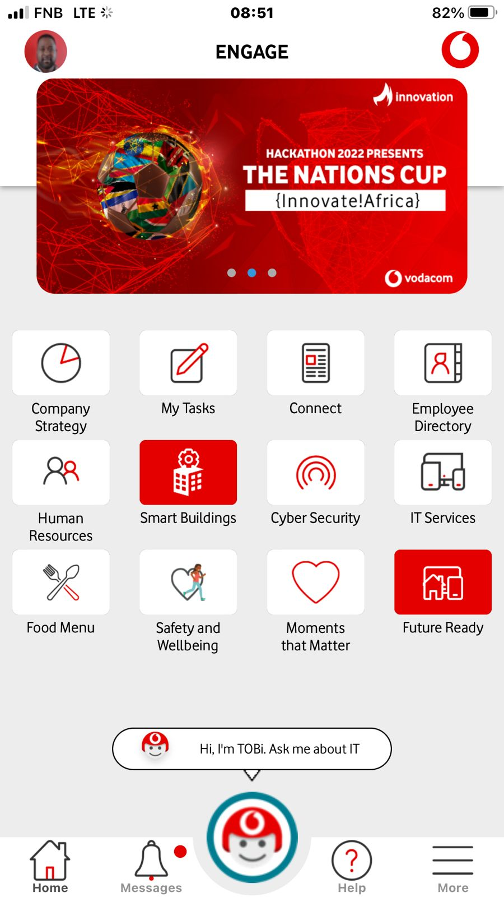

ENGAGE — EMPLOYEE ENGAGEMENT APP REDESIGN
As part of the Vodacom HRIT employee-engagement redesign, I addressed the navigation and feature-discovery problems that made everyday tools difficult to find. The redesign introduced meaningful information architecture, search, favourites, a chatbot hub and a clearer profile experience.

Make the employee app easier to understand and use
The landing page combined a logo loader, communication banner and feature tiles, but employees struggled to locate important tools.
Product design across UX research, value proposition, wireframes, high-fidelity UI, testing and developer handoff.
Feedback + competitive analysis → information architecture → wireframes → Figma testing → implementation support.
Search, meaningful groups, chatbot access, profile controls and favourites made feature discovery more direct.
Fix feature discovery before adding more features
As part of my role redesigning the Vodacom HRIT employee-engagement app, I focused on the navigation and discovery problems employees were already experiencing. The original landing page used a company-logo loader, a scrolling communication banner and tiles leading to features, articles and external apps — but users still struggled to find important tools.
The redesign rethought the information architecture and the value proposition of the home screen: help employees find what they need, understand where it belongs and return to the tools they use most.
Start with what employees could not find
I gathered feedback from existing users who found it difficult to locate key functions and often needed multiple steps to find what they needed. I also reviewed comparable employee-engagement products to understand common navigation and feature-discovery patterns.
Confusion centred on navigation, feature discovery and knowing which tile contained the right tool.
Comparable products used search, meaningful categories and personal shortcuts to reduce cognitive load.
Turn the landing page into a clear starting point rather than a directory of equal-weight tiles.
Group features around employee intent
I created low-fidelity wireframes to simplify the user flow and grouped tiles by the nature of the content or action.
Employee wellness, safety and support tools.
Company policies, procedures and guidance.
Campus and building-related information.
Benefits and employee reward features.
Strategy-focused content and communication.
Linked applications in one predictable section.
I also designed global search with filters for features, content and tools; a chatbot hub for available employee bots; a profile icon with a floating menu; and a favourites section below the scrolling banner.
Test the behaviours that matter
After refining the wireframes with stakeholder and early-tester feedback, I created high-fidelity Figma mockups. Usability testing focused on search, grouped tiles and favourites. I observed how quickly users found a target feature, whether the grouping made sense and how confidently they understood the next action.



Use feedback to sharpen hierarchy and personalisation
Based on user feedback, I refined visual hierarchy and consistency. The chatbot section gained clearer icons and discoverability; the profile menu expanded to show app and personal details; and favourites gave employees control over the tools they used most.
Make the design buildable and measurable
I worked closely with developers, supplying design assets and documentation for layout, responsiveness and interactive states. After launch, I monitored user feedback and app analytics, looking for changes in feature discoverability and overall satisfaction.
Locate features, content and tools directly.
Quick access to available chat-based tools.
Personal context and faster repeat access.
More discoverable, more usable, more personal
Search and categorised tiles reduced the effort needed to find useful tools.
Meaningful grouping helped employees understand where features belonged.
Chatbots, profile controls and favourites made the experience more useful and personal.
The redesign made it easier for employees to access the tools they needed efficiently while giving the product a clearer foundation for future features.
Need this kind of product thinking?
Send me the problem, users and constraints. I’ll reply with a clear next step.
Start an enquiry →Back to all work